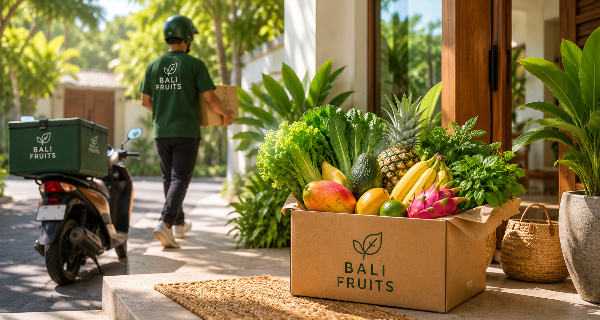

Canggu, Berawa, Umalas, Pererenan
Primary west-coast delivery area for homes, villas and cafes.
Delivery zones
The map shows our current planning zones for daily produce delivery. Exact timing and delivery fee are confirmed after address details.

Primary west-coast delivery area for homes, villas and cafes.
Central south-west route with strong daily delivery coverage.
South-east city and beach-side route for scheduled delivery.
Central Bali route for villas, retreat spaces and family homes.
Southern peninsula route for larger basket and box deliveries.